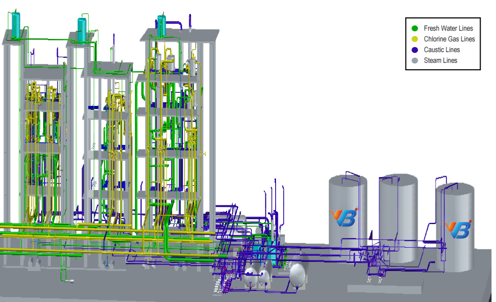
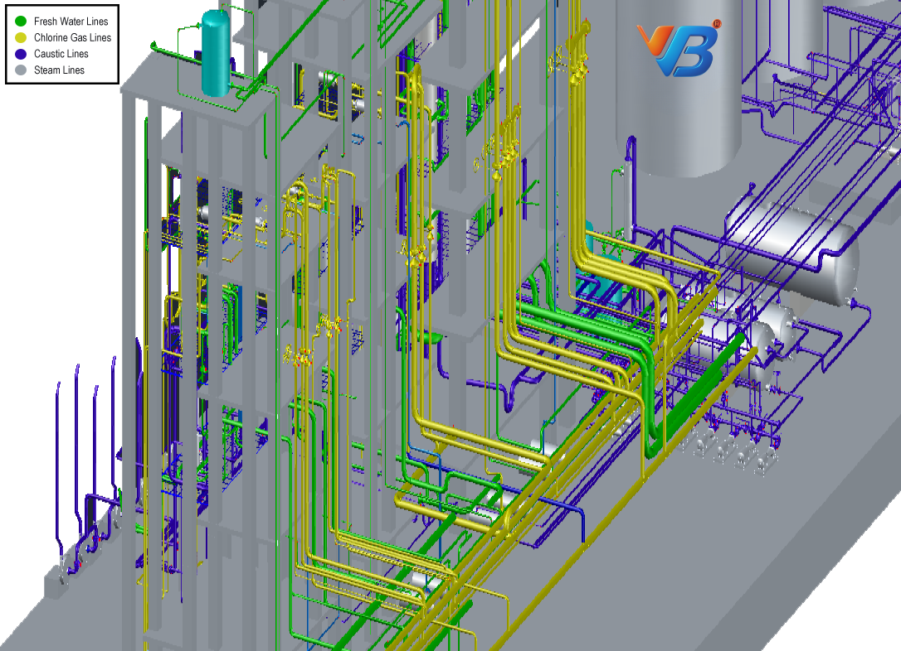
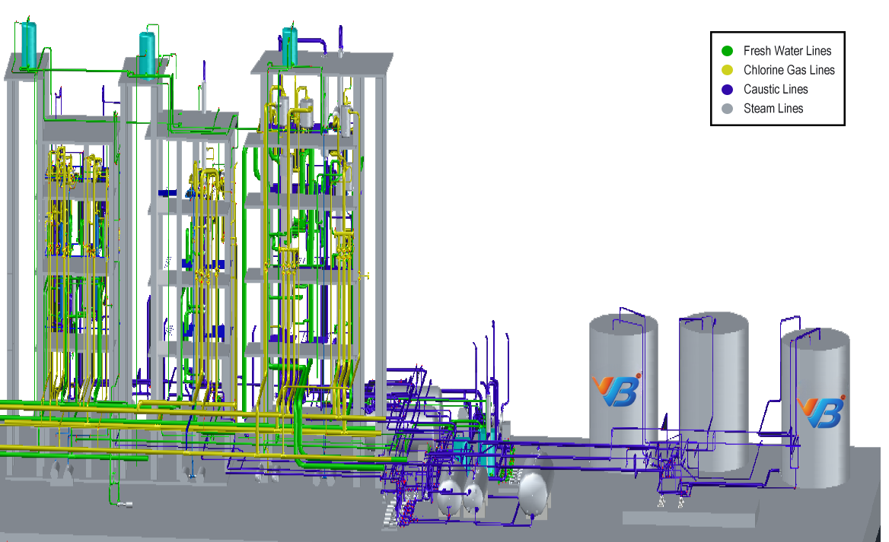

Onsite Process & Piping Digitization
All data required for drafting & Digitizing piping will be collected by our team with the standard checklist and dimensions. A Piping and Instrumentation Diagram (P&ID) is a sort of engineering diagram that depicts the components and flow of an industrial process using symbols, text, and lines. Although used universally across manufacturing and oil & gas industries, P&IDs are usually trapped in image files with limited metadata, making their contents unsearchable and siloed from operational or enterprise systems. We propose a pipeline for digitizing P&IDs to retrieve the information contained in these diagrams. P&ID shows information on piping, fittings, equipment, instrumentation, and process plant in a representative and sequential arrangement based on product flow paths. P&ID means a combination of both Piping and Instrumentation Diagrams (P&IDs) and 3D isometric Piping means 3 Dimensional orientation of pipe Structures for process, chemical, and utility industries.
Design & Drafting
In the design of an industrial facility, our engineers develop process flow sheets and set up project specifications and equipment as per the onsite data. The design drafters use the information supplied by engineers and equipment vendors and apply the knowledge and experience gained in the field to design the facility. In the design and layout of an industrial facility, thousands of piping drawings are needed to provide detailed information to our engineers who will model the facility. The design and layout of the facility must match the customer's expectations while also adhering to safety rules, regulatory standards, client specifications, budget, and start-up date. The piping class is mainly responsible for the facility's design and layout. Drafters and designers must coordinate their efforts with the mechanical, electrical, and instrumentation groups throughout the design process. The piping class must provide each design group with the required information to complete their project and have the estimate set of plan and isometric drawings finished on time. During the time of designing, it is the primary requirement for designers to visit the site premises to verify the physical status of plant information necessary to complete the design in time.
Know More
Features

Tagging & Library Integration
Library integration for the model represents a set of catalog selection rules that satisfy the given design requirements, the Selection Filter Class object defines a list of attributes required to select a catalog according to the specifications (e.g. nominal diameter) and type of equipment and material (e.g. fitting, gasket, or service), and the Selection Filter represents the selection rules for individual catalogs according to the list of specifications. In addition, the specification of an object represents the attributes of the Selected object, and its values are represented as Attribute Value objects. The tagging of objects denotes types of equipment and materials, and the Property denotes the specification of a specific equipment or material type, and its capacity is represented as the Property Value object. The Catalog object stores property values that indicate the functional and physical specifications of specific equipment of equipment or material. The differentiation of equipment and materials specification represented by the catalog are identified depending on a scheduled class of an object. Different types of properties given to pipes and equipment are size, service, Material, and Loop Number in 2D and 3D P&ID.
Design Data Verification
All objects that exist in the project but don't exist in the Plant must be claimed and list out the types of objects missing according to the process flow of the plant. Project and plant cross-verification by our engineers to check the identical percentage during the data verification. The validation of data for each pipe and equipment has been verified by our engineers during the equipment data validation. The timestamp on all objects that exist in the project must be earlier than or equal to the timestamp on the drawing with valid corrections. Maintaining proper revisions for the modifications has been marked on all the drawings. Checking all engineering drawings including piping isometrics, and general arrangement drawings of a plant to verify the design with existing systems in any industry.

Extrude Orthographic Views From 3D Isometric
Piping Designers/Engineers must communicate the information to the yard for fabrication and the site for piping once the three-dimensional (3D) model has been established in pipe design software. The collected information is enough for the fabricator to have an idea of what method and design needs to be fabricated and how the pipe routing should be related to other elements, with exact dimensions and a total Bill of materials (BOM). This is the magnificent role of Piping Isometric Drawings or 3D Isometric Piping. So piping isometrics drawings are directly used for the situations of marking up clashes in site modifications during pipe routing. Piping isometrics indirectly allows determining various parameters necessary during project execution, such as inch and meter, which may be approximated as the Length of pipe (in meters) x Size of pipe (in inches). Inch The diameter of the pipeline is computed. After completion of the total 3D model concerning the areas or sections site design team divides the entire facility. This will result in the conversion of 3D isometrics into 2D orthographic drawings. This is the final stage of the project execution and will give the final deliverables of 3D isometric, 2D P&ID, and process flow sequence for a respective site layout.
Need more information?

Isometric Drawings:
VB Engineering provides all kind of CAD related trainings, In that one of the important concept is isometric drawing. Isometric view is used to visualize the 3 different views in a single view and we learn how to create 3D engineering models by using isometric projection in engineering drawing.
In the manufacturing unit of piping system we use CAD software, for designing pipes in 3D we use piping isometric drawing, in the process of designing those models we learn how to read piping isometric drawing and we offer some isometric drawing exercises pdf links in our website for getting clear idea on how to draw an isometric drawing. By practicing on manufacturing parts, machinery parts of isometric drawing exercises with solutions we analyze how to draw isometric view from orthographic views and to practice 3D models in CAD Services is used to enhance our design skills in CAD Services and also you get maximum on how to draw isometric view in CAD Services. In the category of drawing we have different types of engineering drawings, in our website we attached some files related to the engineering drawings, those are very useful learning engineering drawing basics and also you get more isometric images in that links those are very helpful to your practice.Know More
3d Drawings Design:
VB Engineering will provide all 2d drawings drafting services and 3d solid modeling preparation services.
Electrical CAD Drafting:
VB Engineering will provide all Electrical CAD Drafting services and Single Line Diagram preparation services.
3d Solid Modeling:
VB Engineering will guide you to get your 3d CAD drafting design and all computer aided design services in India.
Basic 2d Drawings:
VB Engineering have good 3d CAD drafting experts for 3d drawing preparation and pipe CAD, 3d drawings design services.